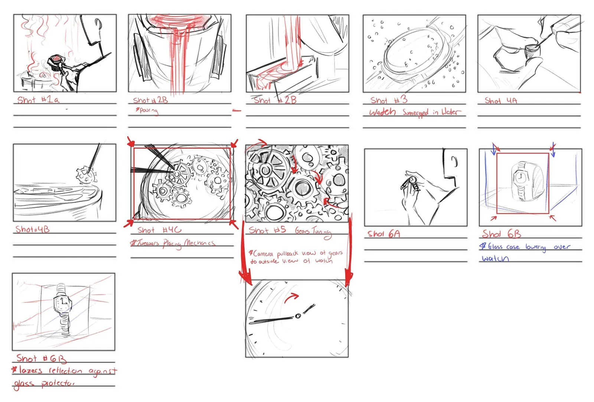
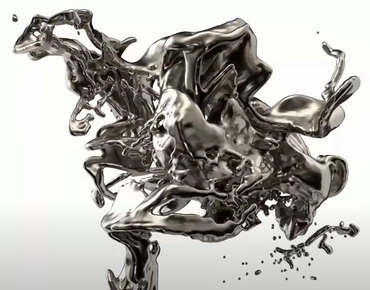

← 部落格 × Harbour
Bomin Kim（特效）
分鏡：
第 2 週
團隊成員
1 月 19 日
Bomin Kim（特效）
Caleb Stovall（3D／2D）
Mojie Tang（特效）
Sydney Relkin（合成）
Yiqi Zheng（特效）
SCAD × HARBOR － 第 2 週
大家好，這是我 SCAD × Harbor 部落格的第二週！
根據導師們的建議，我們做了一些修改。
最重要的修改是統一色調：我們把所有鏡頭都調成冷色調，讓整體更一致。金色粒子的鏡頭和整體故事線關係不大，所以不需要了。
分鏡：
我們有了新的分鏡。鏡頭 2B 改成一個人用鉗子把熔融白金倒進鍋子裡。

真實參考：
真實的熔融白金
美術風格參考：

熔融白金預視：
這代表白金，但並不是熔融白金的真實樣貌。為了讓所有鏡頭的色調一致，我參考了一支手錶廣告中熔融金屬特效的做法。之後會和實拍素材結合。接下來，我會把接觸空氣的液體和其他部分區分開來，讓接觸空氣的部分在表面形成一層薄膜。